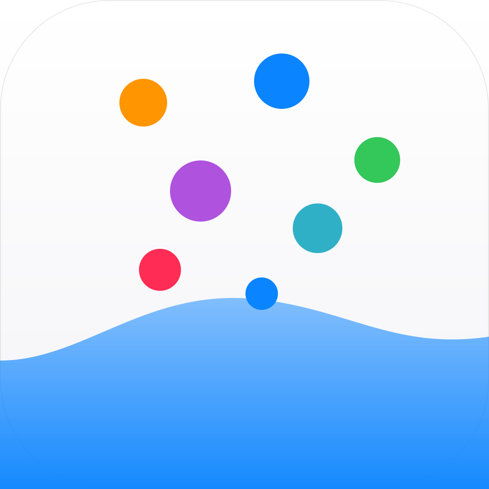

Van Gogh’s Logs
Leg vast wat je opvalt. Zie wat terugkomt.
Sommige dingen merk je pas op als je ze een tijd bijhoudt: hoe vaak iets gebeurt, wanneer, en waar. Van Gogh’s Logs is een logboek voor precies dat. Snel genoeg om het echt te doen, en slim genoeg om je daarna iets terug te laten zien.
- Vastleggen in een paar seconden Tik op de ＋, typ een regel, klaar. Of log vanaf een widget op je beginscherm. Wat er niet meteen bij hoeft, vul je later aan.
- Je eigen logtypes Een vogel die je zag, een hardlooprondje, een uitgave, een idee. Je kiest zelf de velden: tekst, getal, datum, plek, foto, opname, keuzelijst, schaal en meer.
- Meteen zien wat het oplevert Tellingen, verloop over tijd, een kalender, een kaart, de laatste foto’s. Je zet zelf in elkaar wat je wilt zien, per logtype.
- Herhaling, maar alleen als het klopt De app laat zien wanneer iets vaker op dezelfde plek en hetzelfde moment terugkomt, met de kans dat het toeval is erbij. Van een patroon is pas sprake als het ook echt boven toeval uitkomt.
- Vult zichzelf aan Een veld kan zichzelf vullen met je plek, de datum uit een foto, een afspraak uit je agenda, of je stappen en slaap uit Gezondheid. Alleen als jij dat per veld aanzet.
- Op slot als het moet Zet een logtype op slot met Face ID of Touch ID. Het gaat vanzelf weer dicht als je even niets doet.
Het blijft van jou
Er is geen server en geen account. Je logboek staat op je apparaat en synchroniseert via je eigen iCloud tussen iPhone, iPad en Mac. Er wordt niets verzameld, niets gemeten en niets gedeeld, ook niet met mij.
Binnenkort
Voor iPhone, iPad en Mac, in het Nederlands en het Engels.